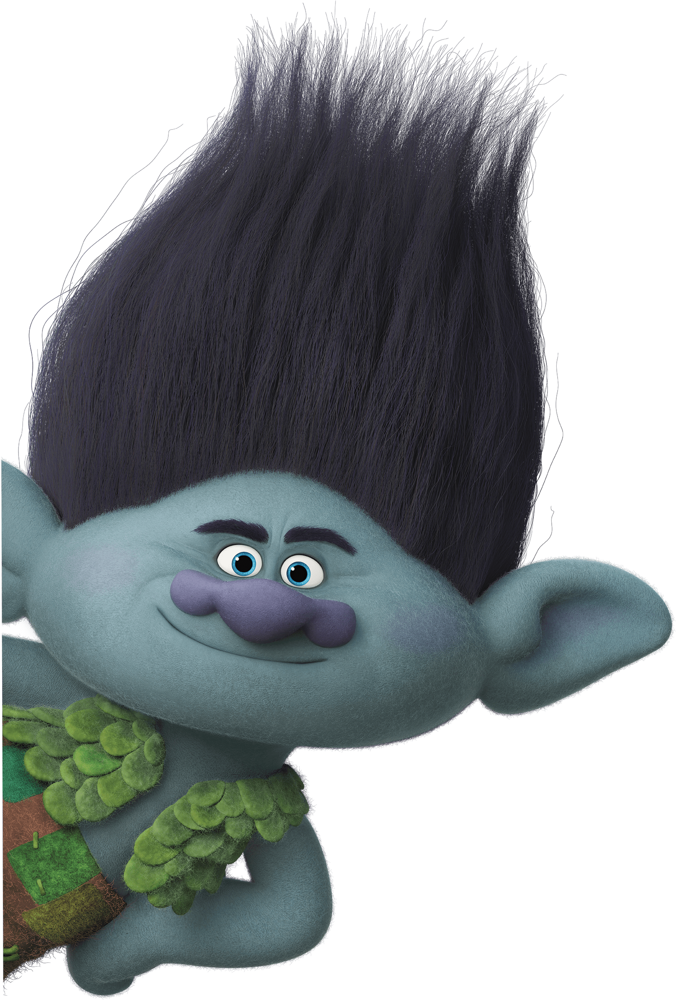

Color of the Day
What is your color for today?

The color of the sky and the ocean, blue is one of the most popular colors. It causes the opposite reaction as red. The color of trust and induce calm and convey serenity and peace. People are more productive in blue rooms. Studies show weightlifters are able to handle heavier weights in blue gyms. It implies trust, responsibility, honesty, loyalty and inner security. It is used to reduce stress, create calmness, relax and create order.
The most emotionally intense color, red stimulates a faster heartbeat and breathing. It is also the color of love. Red clothing gets noticed and makes the wearer appear heavier. Since it is an extreme color, red clothing might not help people in negotiations or confrontations. Red cars are popular targets for thieves. In decorating, red is usually used as an accent. Decorators say that red furniture should be perfect since it will attract attention.
The color of growth and health. Think of nature and see green in all its glory expressing renewal and life. Currently the most popular decorating color, green symbolizes nature. It is the easiest color on the eye and can improve vision. It is a calming, refreshing color. People waiting to appear on TV sit in "green rooms" to relax. Hospitals often use green because it relaxes patients. Brides in the Middle Ages wore green to symbolize fertility. Dark green is masculine, conservative, and implies wealth. It evokes feeling of abundance and a plentiful environment while providing a restful and secure feeling.
The color of optimism. Cheerful sunny yellow is an attention-getter. While it is considered an optimistic color, people lose their tempers more often in yellow rooms, and babies will cry more. It is the most difficult color for the eye to take in, so it can be overpowering if overused. Yellow enhances concentration, hence its use for legal pads. It also speeds metabolism. It stimulates the left side of the left-side of the brain, helping with clear thinking and quick decision making.
The color of encouragement. The combination of yellow and red makes orange convey excitement, warmth and enthusiasm, social and inviting. This is the color of the extrovert. Exuding happiness and joy, releasing inhibitions. Orange is a motivating and encouraging color that appeals to young people. Emotions that are associated with it are optimism, independence, being adventurous, creativity and fun.
The color of spirituality. The energy of red with the calm of blue combine to create purple, a color that inspires reflection and self awareness. It is the color of the sensitive, compassionate intuitive soul - the introvert. Also, purple has long been associated with royalty, and characteristics of quality and luxury. Emotions that are associated with it are imagination, spirituality, compassion, sensitivity and mystery. It\s used to encourage creativity, inspire, combine wisdom and impress luxury.